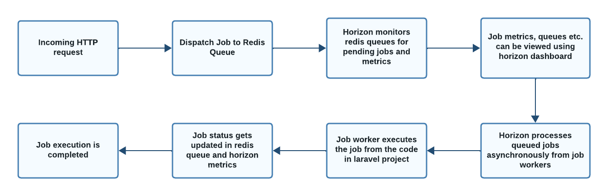

HORIZON
PREREQUISITES
INTRODUCTION AND FEATURES
CONCEPTS
Laravel Queues
Redis queue driver
Horizon Dashboard
Queue Docs : https://laravel.com/docs/8.x/queues
WORKING OF HORIZON
INSTALLATION & GETTING STARTED
You should ensure that your queue connection is set to redis in your queue configuration file. You may use Composer to install Horizon into your Laravel project:
composer require laravel/horizon
After installing Horizon, publish its assets using the horizon install Artisan command:
php artisan horizon:install
php artisan horizon
You may check the current status of the Horizon process using the horizon:status Artisan command:
php artisan horizon:status
LIST OF FUNCTIONALITIES PROVIDED
Tags | Horizon allows you to assign “tags” to jobs, including mailables, event broadcasts, notifications, and queued event listeners. | In fact, Horizon will intelligently and automatically tag most jobs depending on the Eloquent models that are attached to the job.
Notifications
Horizon::routeMailNotificationsTo('example@example.com');
Horizon::routeSlackNotificationsTo('slack-webhook-url', '#channel');
Horizon::routeSmsNotificationsTo('15556667777');
Metrics Horizon includes a metrics dashboard which provides information on your job and queue wait times and throughput. In order to populate this dashboard, you should configure Horizon’s snapshot Artisan command to run every five minutes via your application’s scheduler.
protected function schedule(Schedule $schedule){
$schedule->command('horizon:snapshot')->everyFiveMinutes();
}
CONFIGURATION
Balance Options:
Job Trimming: | The horizon configuration file allows you to configure how long recent and failed jobs should be persisted (in minutes). | By default, recent jobs are kept for one hour while failed jobs are kept for a week:
'trim' => [
'recent' => 60,
'failed' => 10080,
]
HELLO WORLD/POC
Create a new laravel project
$ composer create-project --prefer-dist laravel/laravel horizonSample
$ cd horizonSample
Configure Horizon
$ composer require laravel/horizon
$ php artisan horizon:install
$ php artisan queue:table
Configure mysql Database .env file. (start mysql container)
DB_CONNECTION=mysql
DB_HOST=127.0.0.1
DB_PORT=3306
DB_DATABASE=test
DB_USERNAME=root
DB_PASSWORD=Qwerty@321
Configure Redis in .env file
QUEUE_CONNECTION=redis
REDIS_CLIENT=predis
Install predis requirement.
$ composer require predis/predis
start redis docker container
$ docker run --name redisContainer -p 6379:6379 --restart always --detach redis
Create a sample job class.
$ php artisan make:job SampleJob
Create a route to start the sample job
Route::get('/startJob', function () {
\App\Jobs\SampleJob::dispatch();
return "job started";
});
Start horizon service and php server
$ php artisan horizon
$ php artisan serve
Hit api call http://127.0.0.1:8000/startJob to dispatch the sample job.
Open http://127.0.0.1:8000/horizon/dashboard to view the horizon dashboard.
View dashboard to see the status of the job processing.
Jobs can also be associated with queues. Below method can be used to assign queue to a job.
\App\Jobs\SampleJob::dispatch()->onQueue('sampleQueue');
Configure horizon.php to add queue details.
'defaults' => [
'supervisor-1' => [
'connection' => 'redis',
'queue' => ['default','sampleQueue'],
'balance' => 'auto',
'maxProcesses' => 1,
'tries' => 1,
'nice' => 0,
],
]
Restart the server, after updating the configs
$ php artisan horizon
$ php artisan serve
Check horizon dashboard to check the queue details.